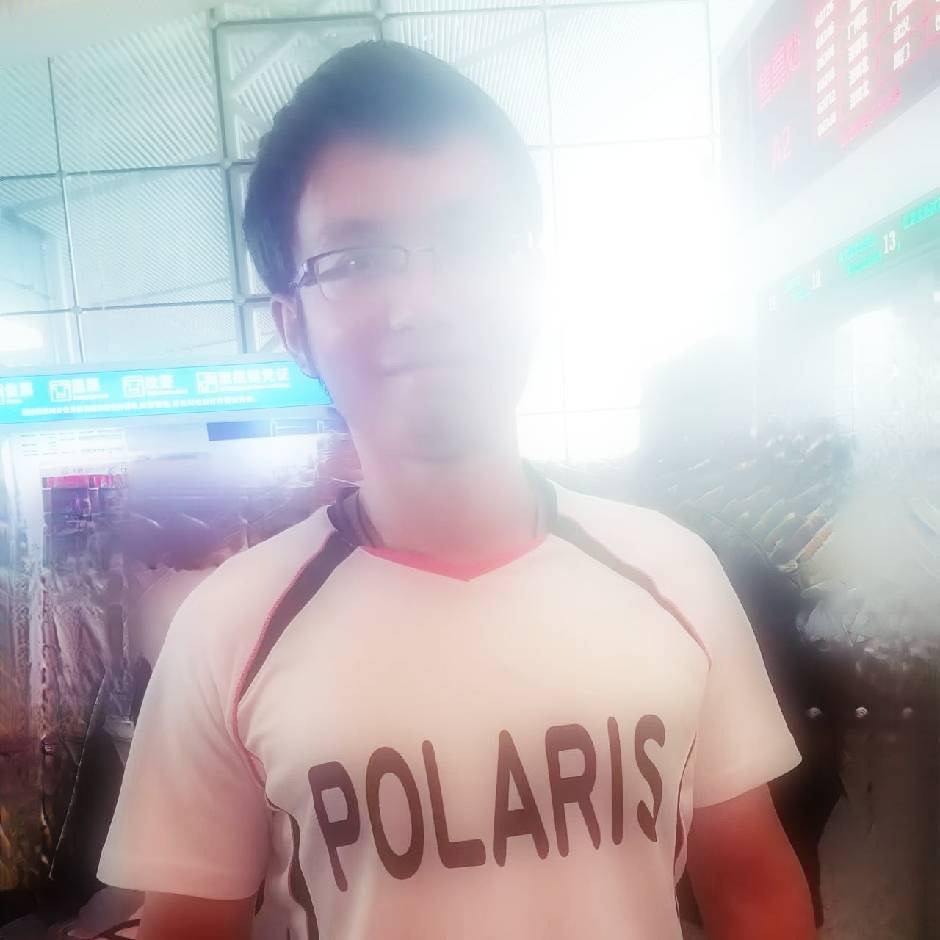

Welcome to my homepage! I am a PhD student at UC Merced.
My research focuses on diffusion models and flow matching, etc.
If you think my work is interesting and worth further discussion, please send me emails.
Email: wqiu5@ucmerced.edu |
Github: github
Diversifying Similar Subjects for Text-to-image Synthesis with Self-Cross Diffusion Guidance and Reward
IJCV, 2026.
Self-Cross Diffusion Guidance for Image Synthesis of Similar Subjects
CVPR, 2025.
M.Sc./Ph.D. in Computer Science
University of California, Merced, USA | 2023-current
Engineer
State Grid Corporation of China, Shanghai, China | 2016 – 2022
M.Eng. in Civil Engineering
Tongji University, Shanghai, China | 2013-2016
B.Eng. in Civil Engineering
Jiangxi University of Science and Technology, Ganzhou, China | 2008-2012